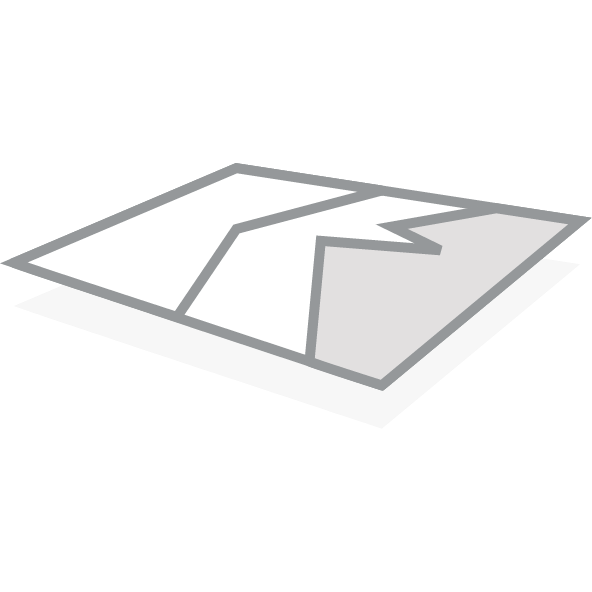
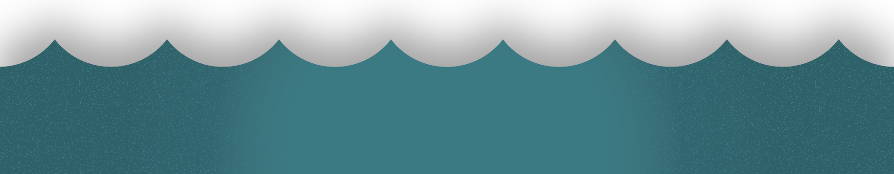
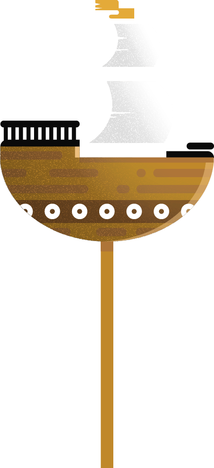
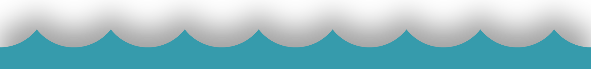
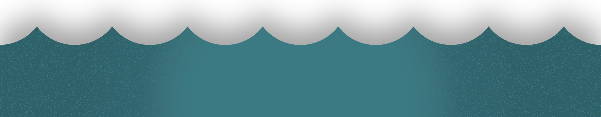
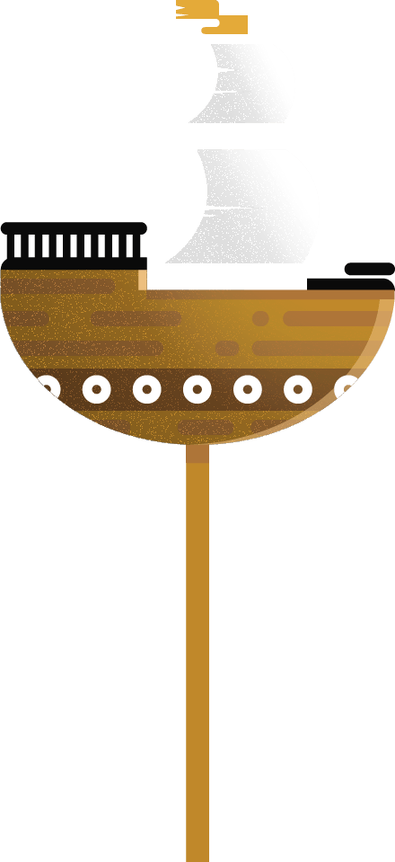
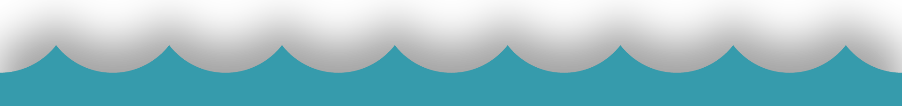

Aargh, wat is de bedoeling?
Voer jullie eerste code in op deze website
(scroll naar beneden)Met de nieuwe tip zoeken jullie een nieuwe code
- 
Herhaal dit tot jullie alle stukjes van de kaart hebben verzameld!

   
  Voer jullie eerste code in op deze website
(scroll naar beneden)
Met de nieuwe tip zoeken jullie een nieuwe code
Herhaal dit tot jullie alle stukjes van de kaart hebben verzameld!